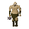
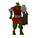
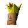
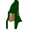
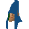

Tree Gnome Village
Location at 2528, 3174 · Kingdom of Kandarin
Open on the world map → Open in knowledge graph → Below: Tree Gnome Village (underground)
NPCs
| NPC | Level | Spawns | Notable drops |
|---|---|---|---|
| 64 | 2 | ||
 Ogre | 53 | 3 | |
| 53 | 2 | ||
| 28 | 3 | Coins, Limpwurt root, Herb drop table, Iron arrow | |
 Orc | 20 | 2 | |
| 19 | 1 | ||
| 6 | 1 | ||
| 5 | 6 | Coins, Water rune, Body rune, Goblin mail | |
| 3 | 1 | ||
| 2 | 4 | Coins, Water rune, Body rune, Goblin mail | |
| 1 | 2 | ||
| 1 | 2 | ||
| 1 | 4 | ||
| 1 | 9 | ||
| 1 | 9 | ||
| shop | 1 | ||
| Butterfly | 1 | ||
| Butterfly | 1 | ||
| 1 | |||
| 1 | |||
| 1 | |||
 King Bolren | 1 | ||
| 1 | |||
 Local Gnome | 4 | ||
| 1 | |||
 Remsai | 1 |